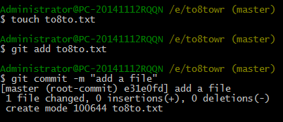

添加文件
第一步：
$ touch to8to.txt --创建一个名为 to8to.txt 的txt文件。当然，也可以直接在工作区右键建立这个文件
第二步：
$ touch to8to.txt --创建一个名为 to8to.txt 的txt文件。当然，也可以直接在工作区右键建立这个文件
第三步：
$ git commit -m “add a file” --"-m" 后面输入的是本次提交的说明，视情况编写
如果你在提交之前添加或者修改了多个文件，可以在最后commit，如下：
$ git add to8to1.txt
$ git add to8to2.txt
$ git add to8to3.txt
$ git commit -m “add three file”
小结：
1，touch xxx 创建文件
2，git add xxx 添加文件（新建的文件或者是修改的文件）
3，git commit -m “xxx” 提交文件